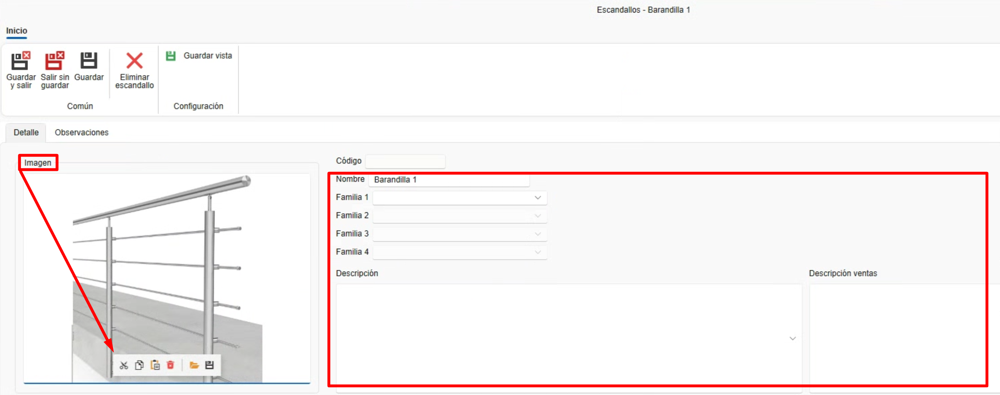
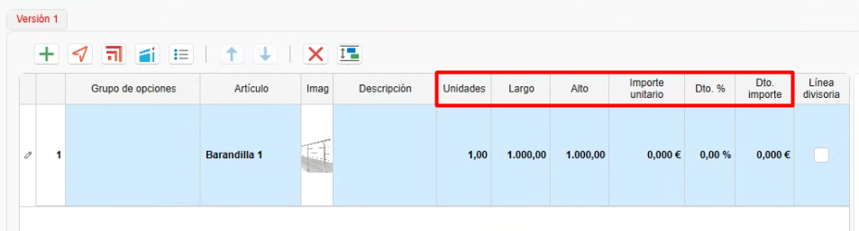

Escandallos (Agrupación de materiales)
1. Introducción
Este manual explica paso a paso cómo utilizar la funcionalidad de Escandallos.
Los escandallos se definen desde ENBLAU, agrupando materiales propios creados desde enMATERIALS.
Además, se pueden agrupar esos materiales y generar las unidades necesarias según diversas condiciones, como las dimensiones, la ubicación de los tramos, la distancia o mediante fórmulas.
2. Escandallos
- Acceder a los escandallos desde Almacenes → Escandallos.

2.1. Creación de Escandallos
-
Para crear un escandallo, sigue estos pasos:
-
Desde el listado de escandallos, selecciona el botón Nuevo para crear un nuevo escandallo.

-
Se abrirá una ventana donde debes definir los siguientes campos:
- Nombre: Define el nombre del escandallo que estás creando.
- Familia: Campo opcional donde se indican las carpetas y subcarpetas en las que se desea añadir el escandallo. Este campo se reflejará posteriormente en el árbol de escandallos dentro del apartado de Documentos de ventas.
- Descripción: Breve descripción del escandallo.
- Descripción ventas: Indica si la descripción para ventas es distinta de la descripción general del escandallo.
- Imagen: Permite añadir una imagen o captura representativa del escandallo.

2.2. Agrupar materiales
-
Una vez creado el escandallo, los pasos siguientes permiten agrupar y generar los materiales correspondientes:
-
Desde el árbol de artículos, ubicado a la derecha, arrastra los materiales que se deben generar para ese escandallo.

-
Luego define las siguientes condiciones según sea necesario:
- Unidades: Indica las unidades que se deben generar del material.
- Distancia: Especifica cada cuánto tramo se debe generar el material.
Ejemplo: 1 tornillo cada 100 mm de tramo. - Desde: Define, junto con la distancia, a partir de qué punto se comienza a contar.
- Ubicación: Despliega un listado para indicar la ubicación del tramo donde se debe generar el material.
Ejemplo: Superior, inferior, derecha, izquierda. - Largo: Permite indicar una longitud fija o usar una fórmula.
Ejemplo: L-50 → calcula la longitud de la barra menos 50 mm. - Alto: Permite indicar una altura fija o usar una fórmula.
Ejemplo: A-50 → calcula la altura de la superficie menos 50 mm. - Corte A: Define el tipo de corte del lado A de la barra.
Ejemplo: Corte a 90° o 45°. - Corte B: Define el tipo de corte del lado B de la barra.
Ejemplo: Corte a 90° o 45°.

-
Nota: Los campos se activan dependiendo del tipo de cálculo del material (pieza, barra, junta o superficie).
3. Cómo usar escandallos
-
Desde cualquier documento de ventas (Presupuesto, Pedido, Producción, etc.), accede al apartado Escandallos, ubicado en la parte derecha del documento.
A continuación, sigue los pasos:-
Arrastra un escandallo a la posición del documento.

-
Se abrirá una ventana del editor de escandallos, donde podrás editar los valores antes de aceptar.

-
Una vez aceptado, podrás modificar las medidas, precios y descuentos.
Si los materiales tienen asociada una tarifa de venta, el precio se calculará automáticamente por despiece.
-
Accede a Material necesario para listar los materiales con las unidades definidas según las condiciones del escandallo y realizar el pedido de compra al proveedor.

-
 Español
Español
 English
English
 Italiano
Italiano
 Português
Português